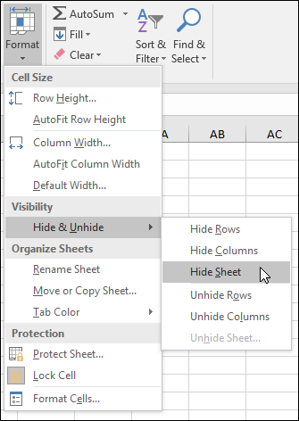
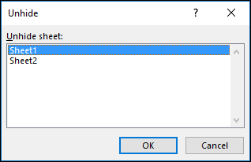
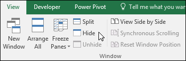
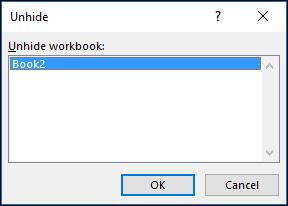

Hide or show worksheets or workbooks
You can hide any worksheet in a workbook to remove it from view. You can also hide the workbook window of a workbook to remove it from your workspace. The data in hidden worksheets and workbook windows is not visible, but it can still be referenced from other worksheets and workbooks. You can display hidden worksheets or workbook windows as needed.
By default, all workbook that you open are displayed on the taskbar, but you can hide or display them on the taskbar as needed.
Hide or unhide a worksheet
-
Select the worksheets that you want to hide.
How to select worksheets
|
To select
|
Do this
|
|
A single sheet
|
Click the sheet tab.
If you don't see the tab that you want, click the scrolling buttons to the left of the sheet tabs to display the tab, and then click the tab.
|
|
Two or more adjacent sheets
|
Click the tab for the first sheet. Then hold down Shift while you click the tab for the last sheet that you want to select.
|
|
Two or more nonadjacent sheets
|
Click the tab for the first sheet. Then hold down Ctrl while you click the tabs of the other sheets that you want to select.
|
|
All sheets in a workbook
|
Right-click a sheet tab, and then click Select All Sheets on the shortcut menu.
|
Tip: When multiple worksheets are selected, [Group] appears in the title bar at the top of the worksheet. To cancel a selection of multiple worksheets in a workbook, click any unselected worksheet. If no unselected sheet is visible, right-click the tab of a selected sheet, and then click Ungroup Sheets on the shortcut menu.
-
On the Home tab, in the Cells group, click Format > Visibility > Hide & Unhide > Hide Sheet.

-
To unhide worksheets, follow the same steps, but select Unhide. You'll be presented with a dialog box listing which sheets are hidden, so select the ones you want to unhide.

Note: Worksheets hidden by VBA code have the property xlSheetVeryHidden; the Unhide command will not display those hidden sheets. If you are using a workbook that contains VBA code and you encounter problems with hidden worksheets, contact the workbook owner for more information.
Hide or unhide a workbook window
-
On the View tab, in the Window group, click Hide or Unhide.
On a Mac, this is under the Window menu in the file menu above the ribbon.

Notes:
-
When you Unhide a workbook, select from the list in the Unhide dialog box.

-
If Unhide is unavailable, the workbook does not contain hidden workbook windows.
-
When you exit Excel, you will be asked if you want to save changes to the hidden workbook window. Click Yes if you want the workbook window to be the same as you left it (hidden or unhidden), the next time that you open the workbook.
Hide or display workbook windows on the Windows taskbar
Excel 2013 introduced the Single Document Interface, where each workbook opens in its own window.
-
Click File > Options.
For Excel 2007, click the Microsoft Office Button  , then Excel Options.
, then Excel Options.
-
Then click Advanced > Display > clear or select the Show all windows in the Taskbar check box.